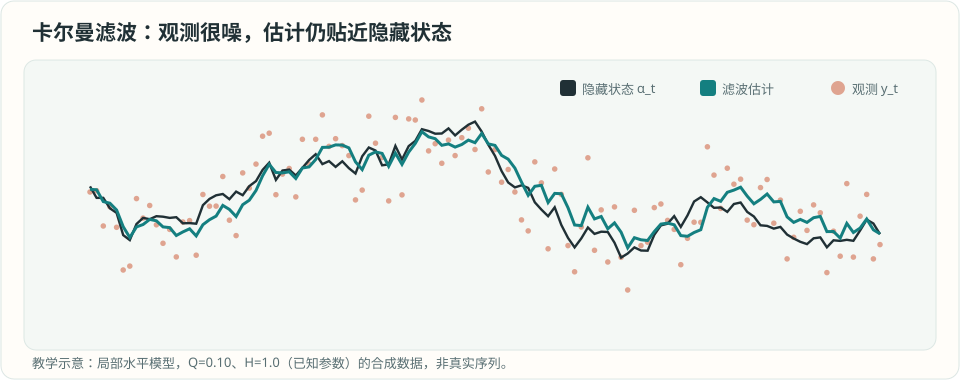
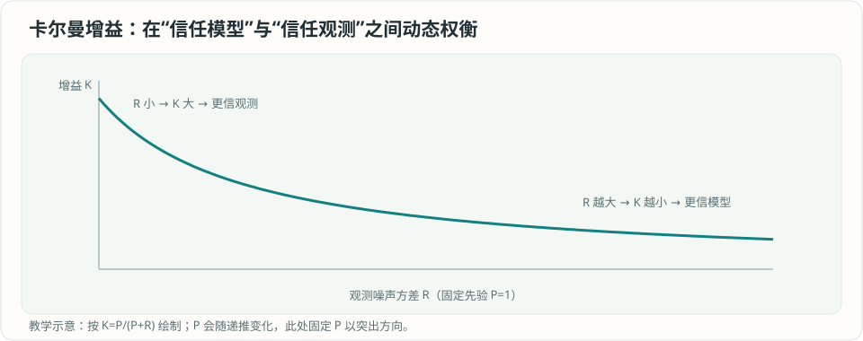

CHAPTER 18 / 28 · STATE SPACE
状态空间模型与卡尔曼滤波
把“看不见的状态”与“看得见的观测”分开，用两个方程描述动态；卡尔曼滤波递推地估计状态并给出不确定度。ARIMA、指数平滑都可看作它的特例。
ARIMA 里“隐藏”的是残差加权和，指数平滑里“隐藏”的是时变水平与趋势。状态空间模型把这种共性提炼成统一框架：一条状态方程描述隐藏状态如何演化，一条观测方程描述观测如何由状态生成。
先纠正一个误解：状态空间模型不是“另一种要背的新模型”，而是一种表示方式。它把已有模型写成矩阵形式，从而能处理缺失值、时变参数并统一估计。卡尔曼滤波则是这套表示的推理引擎。
01 · 状态-观测两层结构
框架由两条方程组成：状态方程给出隐藏状态的转移，观测方程把状态映射成可见数据。
T 加过程噪声相连；下排是可见观测，由当期状态经 Z 映射并叠加观测噪声得到。“状态不可见、观测有噪声”是这套框架的全部前提。图为结构示意。状态可以是标量（如局部水平），也可以是向量（如水平、趋势、季节三个分量）。这也是它能统一多种模型的根本原因。
02 · 预测-更新循环
卡尔曼滤波每期执行两步：先用状态方程预测，再用新观测更新。更新把预测误差（创新）按增益分配给状态修正。

注意：滤波在每一步都同时维护状态估计与其方差，因此它给出的是分布而非单点，这也是它比普通移动平均更严谨的原因。
03 · 卡尔曼增益
增益决定“创新”中有多少被写进状态。它是先验不确定度与观测噪声的比值，因此会随每期自动调整。

K=P/(P+R) 随观测噪声方差 R 增大而下降：噪声越大越信模型，噪声越小越信观测。增益是“模型信任”与“数据信任”的自动平衡。图为按该式绘制的教学示意，P 会随递推变化。04 · 滤波与平滑
滤波（filtering）是在线估计：时刻 t 的状态估计只用截至 t 的信息。平滑（smoothing）是离线估计：拿到全部数据后回望过去，用未来信息修正历史状态，因此通常更精确。
关键区别：末端时刻的滤波与平滑值相同，但在序列内部平滑会明显不同于滤波。因此不能用平滑后的状态去做“实时”回测——那相当于用了未来信息，构成泄露。
05 · 统一视角
状态空间框架的价值在于把多类模型写成同一形式，从而共享估计、诊断与缺失值处理机制。
| 模型 | 状态向量的含义 | 备注 |
|---|---|---|
| 局部水平 / 局部线性趋势 | 时变水平（可加趋势） | 指数平滑的随机形式 |
| Holt–Winters | 水平、趋势、季节 | 加性或乘性季节 |
| ARIMA(p,d,q) | AR 与 MA 分量的状态 | 可用卡尔曼滤波估计与预测 |
| 动态回归（时变系数） | 随时间变化的回归系数 | 普通回归就是系数恒定的特例 |
“统一”不等于“都最优”：选哪种表示仍要看数据的性质与约束（如平稳性、季节形式）。状态空间只是提供了一个共同的容器。
06 · Python：局部水平模型
下面生成一个局部水平模型（隐藏状态是随机游走，观测叠加噪声），用 statsmodels 的 UnobservedComponents 估计方差参数，并对比滤波与平滑估计。只依赖 numpy 与 statsmodels。
import numpy as np
from statsmodels.tsa.statespace.structural import UnobservedComponents
rng = np.random.default_rng(18)
n = 200
level = np.cumsum(rng.standard_normal(n)) * np.sqrt(0.10) # 隐藏状态
Y = level + rng.standard_normal(n) * np.sqrt(1.0) # 观测
res = UnobservedComponents(Y, level="local level").fit(disp=False)
print("方差参数 (过程, 观测):", np.round(res.params, 3))
# 内部时刻：平滑不同于滤波；末端时刻两者相同
print("滤波 @ t=100:", round(float(res.filtered_state[0, 100]), 3))
print("平滑 @ t=100:", round(float(res.smoothed_state[0, 100]), 3))
print("预测未来 3 期:", np.round(res.get_forecast(3).predicted_mean, 3))
assert res.filtered_state.shape[0] == 1预期结果：估计出的观测方差明显大于过程方差（因为观测噪声更大）；内部时刻的平滑估计与滤波估计不同，而末端时刻会重合。这是合成数据上的结构验证，不构成对任何真实序列的结论；真实应用需先确认状态设定（水平/趋势/季节）与噪声假设。
07 · 与机器学习的衔接
到这里，我们走完了经典时间序列的核心方法：从单变量 AR/MA/ARMA，到差分与季节结构、诊断与评估，再到波动率、多元系统、协整和状态空间的统一框架。从下一章开始转入以特征工程为根底的现代方法：树模型、自动预测工具、RNN 与 Transformer 等。
进一步阅读与技术核对
引用指向状态空间框架、卡尔曼滤波与实现接口的官方资料。